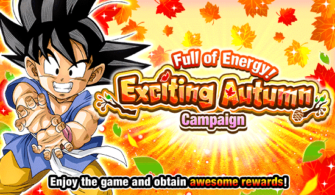
Certamente todo mundo tem bastante DSs pra isso
Enfim, é uma celebração pós-WWC, não tem muito oq dizer
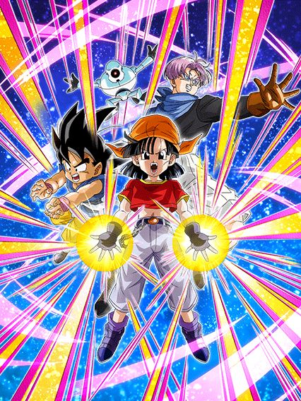
Criança engraçada acidentalmente derruba bomba nuclear em uma Red Zone; Entenda o caso.
A Pan foi o melhor card do jogo brevemente, literalmente destruindo a luta mais difícil do jogo que era a Red Zone do Broly
Ela se resume a stackar 2050 vezes e estourar tudo com a Active Skill dela, mas isso talvez dê um trabalho pra fazer..
A Pan criou e patenteou a famigerada "Mecânica da Pan", que é uma das paradas mais irritantes de todos os tempos
Ela tem 50% de redução de dano, que é obviamente muito bom, mas só ANTES de atacar 💀
Sabe oq acontece se você levar um Super Attack do boss depois da Pan atacar? Pois é. É o game over meu caro
Bom, tirando isso, a Pan builda 100% de ATK e DEF a mais atacando 5 vezes, mas a grande fonte de dano vem do fato que ela stacka ATK no Super Attack
Caso ela esteja sozinha, então ela stacka apenas 30% de ATK, mas se tiver um Trunks, Giru, ou Goku (GT), ela stacka 50%, o que é bem forte né
E depois de builar ela completamente e stackar muito no processo, vc manda a Active Skill absurda dela
Muito dano, 59% de chance de crítico e uma das melhores OSTs do jogo inteiro, além de uma animação muito linda
O único chato é que você precisa de um Goku do GT no turno pra usar, mas dá pra relevar né
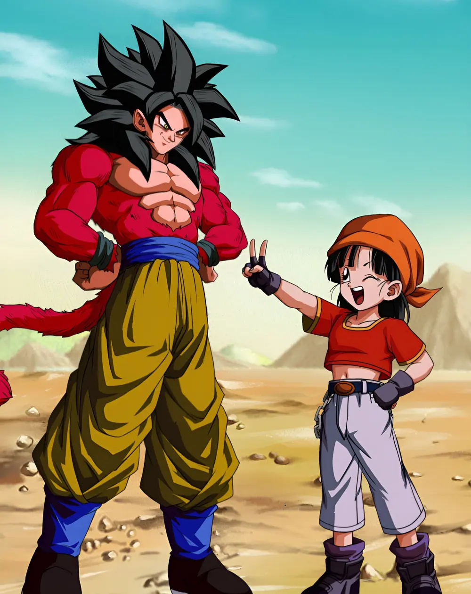
Pô isso é muito fofo mano
Esse card consegue até fazer com que a Pan do GT pareça uma personagem boa-
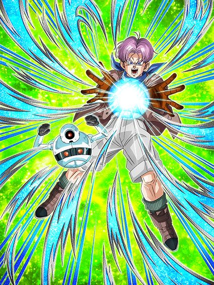
Orb changer decente.
Esses caras mudam orbs AGL e TEQ pra INT, além de darem 20% de ATK e DEF pra GT Heroes, Bond of Friendship e Dragon Ball Seekers
O único chato deles é que eles precisam bastante dos orbs que eles mesmos criam
Com 3 orbs pegos, eles ganham 120% de ATK e DEF a mais, e com 5 orbs eles ganham mais um buff de 120% de ATK e DEF
Não só isso, mas eles também aumentam o suporte pra 30% ao invés de 20%, e ainda dão 10% de chance de crítico pra todo mundo se pegarem 7 orbs
Então é.. em geral eles acabam sendo bem esfomeados pelos orbs q eles mesmos criaram, mas o suporte é muito bom sim, ajuda a Pan.
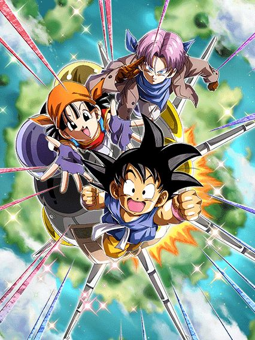
Eles ganharam 77% de defesa.
É basicamente isso. Essencialmente o único buff na defesa deles foi eles terem 77% de DEF no começo do turno, de resto, muita coisa ficou igual
77% de ATK e DEF fazendo um Super Attack, e se for um Ultra Super Attack aumenta mais 77%..
Completamente igual
Uma coisa legal é que agora, além do Ki, eles também ganham 7% de ATK por Dragon Ball Seekers ou GT Heroes no time, o que é interessante
Eles também ganham mais Ki e 50% de chance de crítico se todos os aliados no turno forem de uma das categorias q eu mencionei
Mas é só isso mesmo.. sei lá, eles ficaram bons mas podiam ter ganhado um pouco mais sabe..
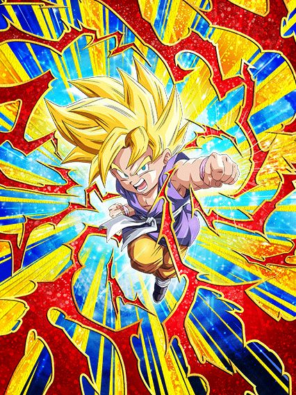
Nuker interessante.
Esse cara ganha 14% de ATK e DEF por orb pega
Também ganha mais 59% de ATK e DEF se pegar pelo menos 3 orbs
E se pegar 5 orbs, ganha 50% de chance de crítico
Ele tem um buff de 59% de ATK e DEF que só dura nos 7 turnos iniciais dele, que é bem ok né
Enfim, ele é um nuker bem básico, só sofre do problema de ele não criar os próprios orbs que ele quer
Ah, eu me enganei, ele muda orbs aleatoriamente pra rainbow se tiver um inimigo GT BOSSESKKKKKKKKKKKKKKKKKKKKKKKKKKKKKKKKKK
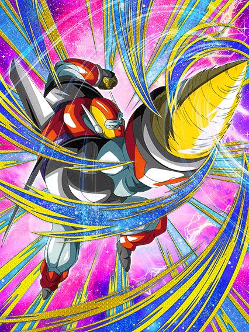
Ele precisa de um time GT Bosses.. já sabe noq vai dar né?
Esse cara só dá dano, e é só isso que ele faz
Ele não tem crítico ou adicional.. nada
Ele só dá dano bruto e acabou
Se você quiser alguma defesa, você tem que ter no mínimo mais 3 aliados GT Bosses com ele
Simplesmente intankavel
Eu só me refiro a ele com letra maiúscula pq se as restrições forem cumpridas o dano dele é realmente bom.
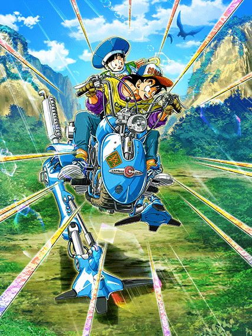
Até que eles são usáveis.
Esses caras buildam 300 mil coisas de formas diferentes
Buildam atacando normalmente, buildam dando Super Attacks, buildam a cada turno que passa.. muita coisa
Apesar de tudo, eles até conseguem ser úteis se completamente buildados, até pq eles stackam DEF no Ultra Super Attack
Se vc deixar eles no slot 3 eles curam HP e até lançam um adicional com 70% de chance de ser um Super, bem decente
Em geral, card bem demorado pra buildar, mas eles não são ruins não
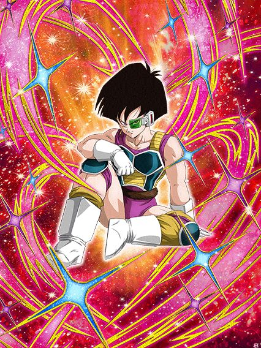
Útil por 4 turnos.
Essa Fasha é muito interessante, já que além de buffar Peppy Gals, ela também buffa Team Bardock, que realmente precisa de algum buff que não seja outro Bardock né
Ela tem defesa ativa por 4 turnos, e a capacidade defensiva dela é essa
Bom, ela se resume a tomar o máximo de ataques possível, já que ela builda 150% de ATK e DEF tomando 5 ataques e mais 150% se levar 5 ataques enquanto a defesa ativa estiver ali
Não diria que ela é tão útil quanto a Cheelai, mas ela é muito útil dependendo do evento q cê for fazer.
Fato: A Fasha é o único card do jogo que não fica com um "fundo de diamantes" depois de levar Dokkan Awaken
Esse fundo fica só visível dentro do jogo em outros cards e deixa eles muito feios, mas ela ficou de boa por motivos desconhecidos.
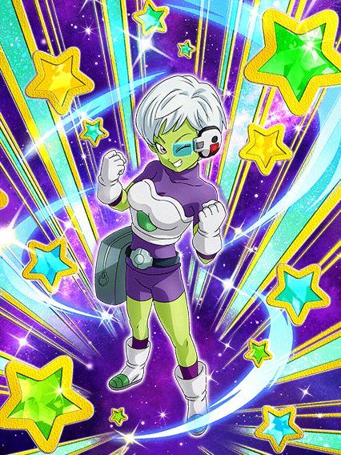
CHEELAI INT GOAT.
A Cheelai é a primeira personagem moderna do Dokkan que tem legitimamente NENHUM ATK na passiva inteira
O dano dela é essencialmente inexistente, ela não chega nem a 1 milhão de dano básico sabe
Bem doido
Mas o dano não importa, já que o suporte da Cheelai é um dos melhores do jogo
Veja bem, a Cheelai tem:
- Scouter infinito em todos os turnos em que ela estiver presente
- Muda orbs aleatoriamente pra rainbow infinitamente
- Dá 39% de ATK e DEF sem restrições pra todos os aliados
- Tem 70% de chance de desvio
Não só isso, mas cada desvio que ela fizer dá 39% de DEF no turno, o que te dá um pouco mais de esperança de sobreviver caso ela acabe levando um ataque, já que apesar de ser totalmente defensiva, ela é meio desvia-ou-morre
Felizmente, ela cura 39% de HP caso vc desvie pelo menos 3 vezes no turno, o que é bem útil
Enfim, ficou óbvio o quão absurdamente forte ela é, mesmo não tendo dano
Simplesmente um dos suportes mais fortes e mais úteis do jogo inteiro
Se você tiver com muita coragem (e sorte), dá até pra levar ela em algum time sem leader skill mesmo, mas não é recomendável
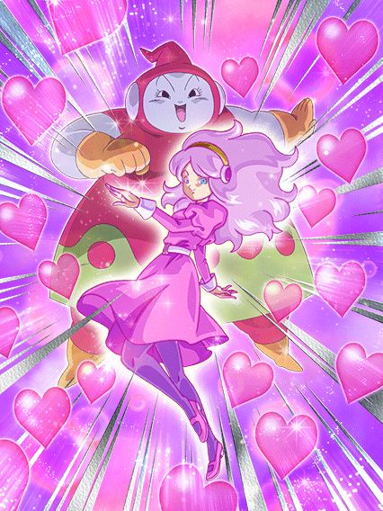 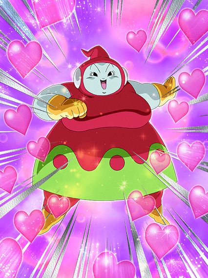
Personagem Peppy Gals genérica.
A Ribrianne precisa de um time inteiro Peppy Gals pra ter buffs pra ela e debuffar o inimigo, além de ela dar 30% de ATK e DEF pra Peppy Gals também
Ela lança um adicional com 50% de chance de ser um Super Attack caso o inimigo esteja debuffado, e lança outro adicional de 50% caso o inimigo esteja selado ou stunado
E ela stacka 20% de ATK e DEF no Super Attack, então é.. aproveite os stacks eu acho
Em geral, personagem usável, mas bem simplona.
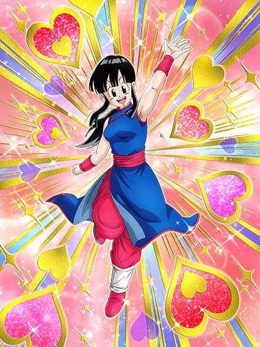
Suporte muito forte.
Essa Chi-Chi simplesmente dá suporte de 120% de DEF pra Peppy Gals, o que é bem absurdo
Além disso, ela tem um dano decente que vai ficando mais forte a cada turno e o Super Attack dela sela o Super do inimigo garantido, muito interessante
Em geral, mais um buff forte pro time
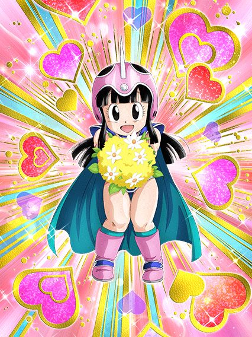
Dêem um Gokuzinho a esta jovem ou ela literalmente NÃO TEM defesa.
A Chi-Chi tem bastante dano, mas 0 defesa caso não tenha um Gokuzinho no time
Melhor ainda se ele estiver no turno com ela, assim ela tem 300% de DEF
Ela ganha 20% de chance de crítico e desvio por aliado Youth no turno, que deve ser relativamente fácil
40% de chance de desvio.. bastante dano e crítico.. defesa aceitável..
Em geral, bom EZA.
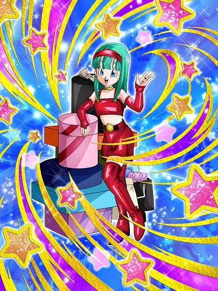
Suporte extremamente engraçado.
A Bra é outra personagem que tem pouco dano, mas foca no suporte
Ela dá 40% de ATK pra todos aliados incondicional, o que é ótimo
Ela ganha um pouco mais de ATK e DEF e 70% de chance de desvio caso tenham pelo menos 2 Peppy Gals no time
E em geral, é basicamente só isso
Ela stacka 100% de ATK no Super Attack dela (que tem uma das animações antigas mais engraçadas pra mim), mas como eu disse, o foco dela não é dano, então não fique tentando stackar demais
Mais um EZA bom. É uma raridade todas as Peppy Gals serem usáveis, obrigado Dokkan.
Você chegou ao fim dessa página!
Obrigado por ler tudo, e fica a vontade pra ver outras